地下城场地底图
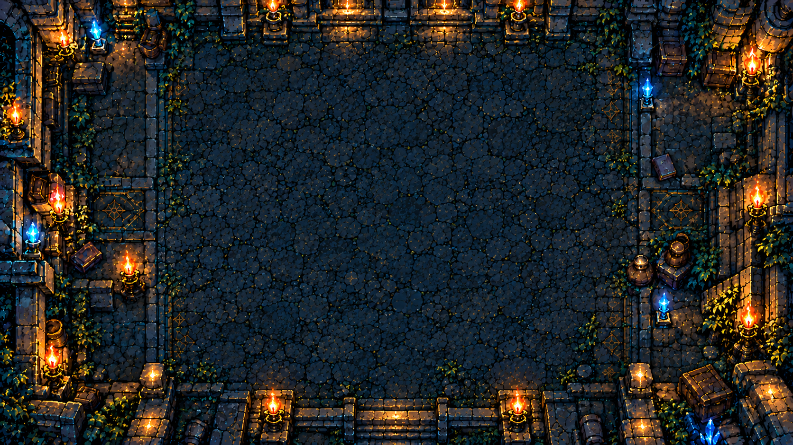
01-dungeon-background.png · 1个取用区域

dungeon_background最新正俯视地下城样稿衍生 · 内置 imagegen 生成 · 12组 / 74个取用区域。UI文字、数值、卡图与卡框均由运行时叠加。棋盘格是预览页面背景，PNG带真实透明通道。
对局检索采用卡牌效果候选选择逻辑：效果提示 → 候选卡牌 → 选择与详情 → 确认。允许取消时才显示返回。使用说明 · 切片坐标 · 生成提示词

01-dungeon-background.png · 1个取用区域
dungeon_background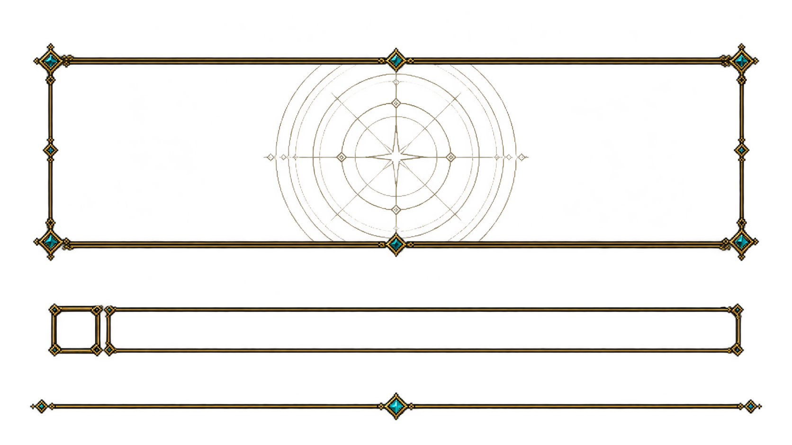
02b-field-structure-atlas.png · 3个取用区域
casting_continuous · analysis_row · field_divider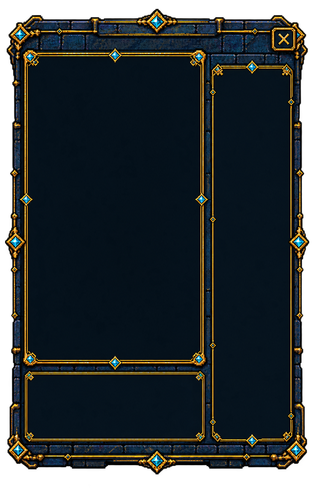
03-card-detail-panel.png · 1个取用区域
detail_panel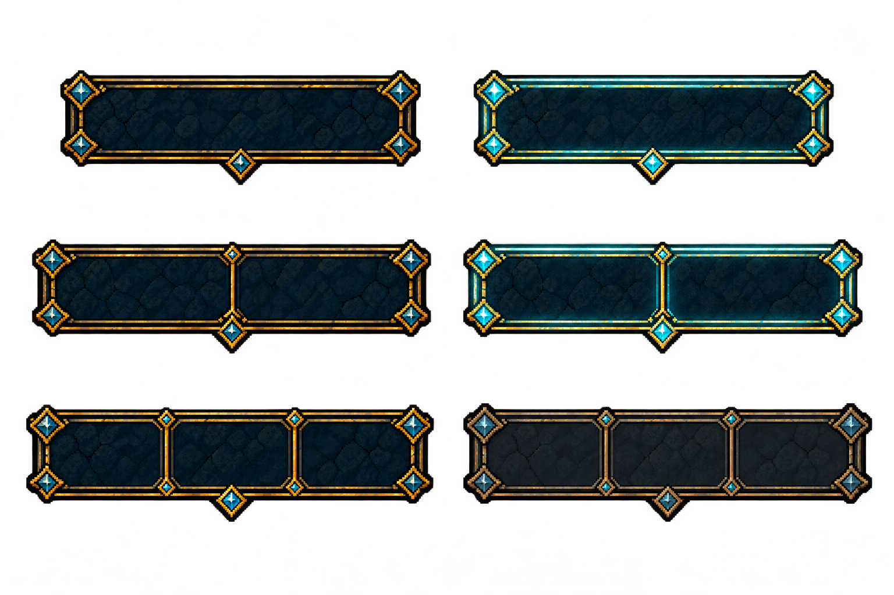
04-card-actions-atlas.png · 6个取用区域
action_one_normal · action_one_hover · action_two_normal · action_two_hover · action_three_normal · action_three_disabled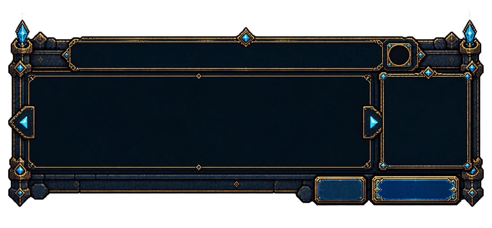
05b-effect-selection-popup.png · 10个取用区域
effect_popup_complete · effect_instruction_header · effect_candidates_body · effect_preview_body · effect_count_badge · effect_page_previous · effect_page_next · effect_confirm_button · effect_optional_return_button · effect_footer_repeatable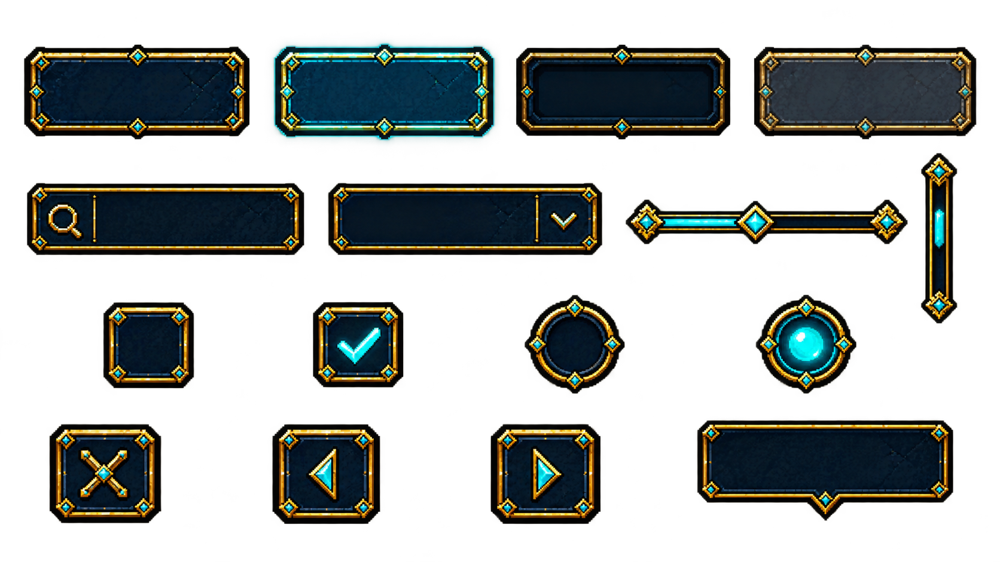
06-common-controls-atlas.png · 16个取用区域
button_normal · button_hover · button_pressed · button_disabled · input_search · dropdown · slider · scrollbar · checkbox_off · checkbox_on · radio_off · radio_on · close_button · previous_button · next_button · tooltip_small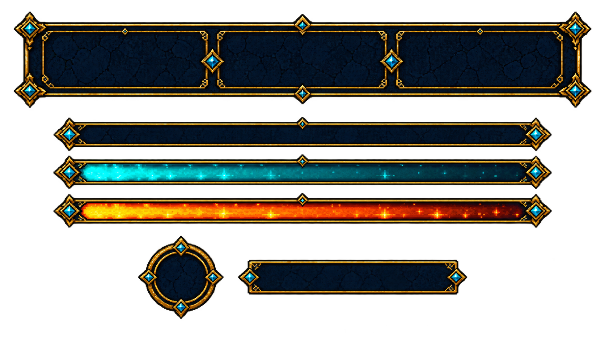
07-hud-load-bar-atlas.png · 6个取用区域
player_hud · load_track · load_fill_normal · load_fill_warning · round_badge · phase_banner08-resource-icons-atlas.png · 3个取用区域
resource_life · resource_mana · resource_load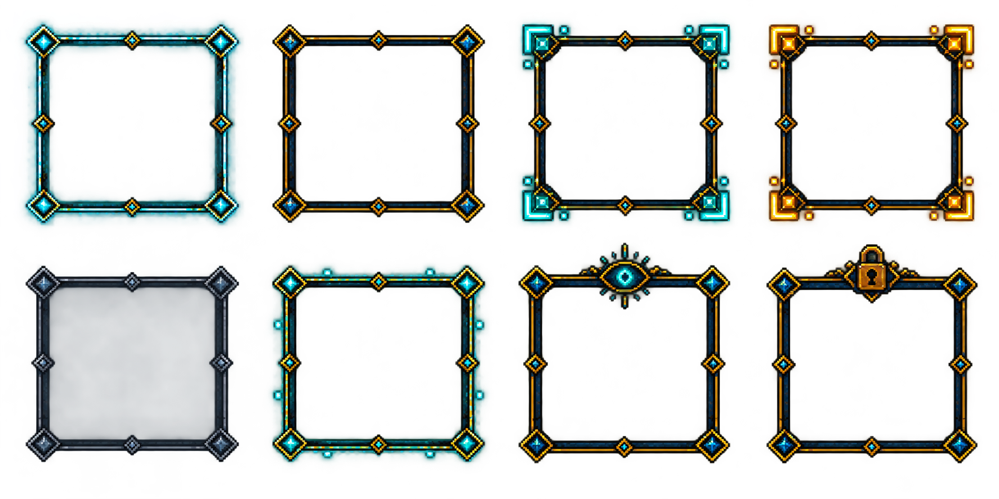
09-selection-state-atlas.png · 8个取用区域
state_selected · state_hover · state_valid_target · state_material_selected · state_disabled · state_sustained · state_visible · state_unavailable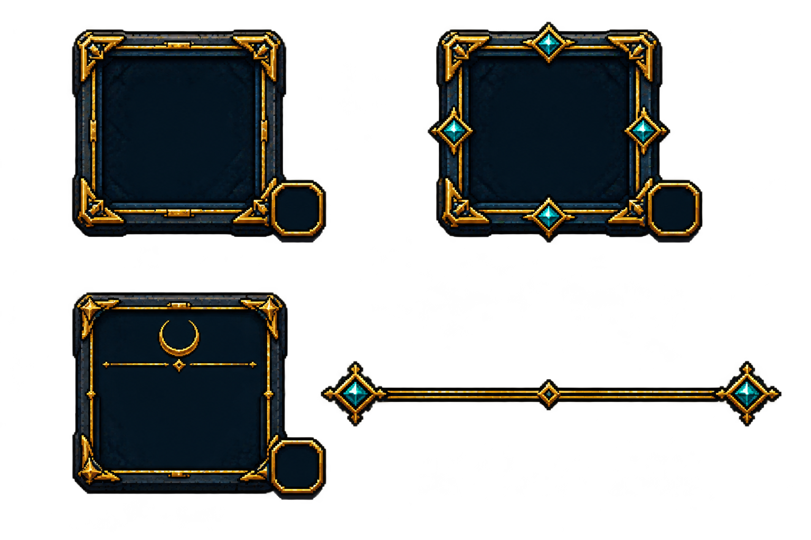
10-zone-plates-atlas.png · 4个取用区域
main_deck_plate · side_deck_plate · ash_plate · hand_divider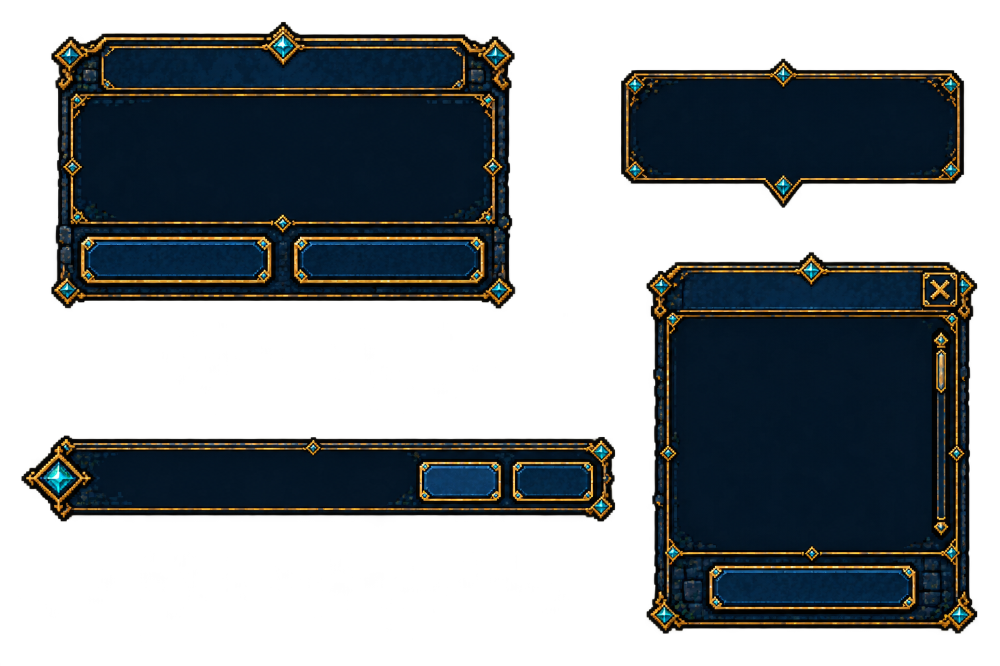
11-information-panels-atlas.png · 4个取用区域
confirmation_panel · tooltip_large · response_notification · information_list_panel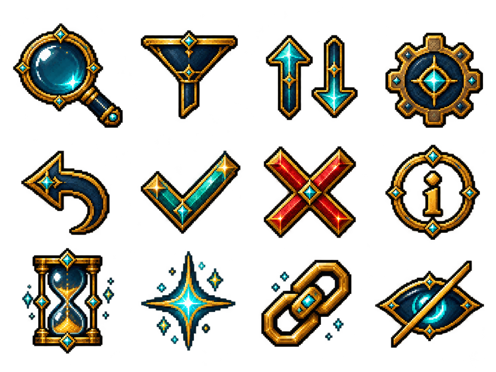
12-utility-icons-atlas.png · 12个取用区域
icon_search · icon_filter · icon_sort · icon_settings · icon_back · icon_confirm · icon_cancel · icon_information · icon_analysis_pending · icon_ready · icon_attached · icon_hidden